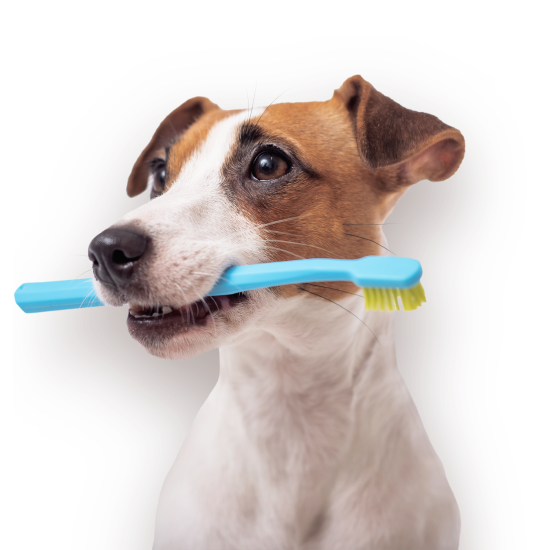
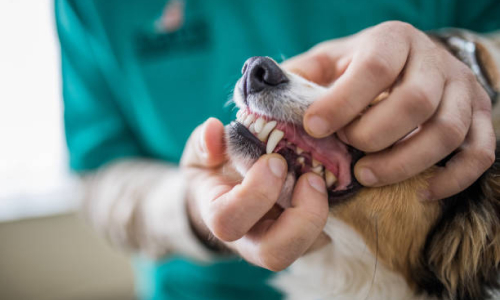
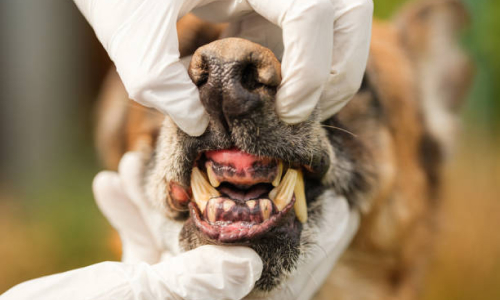
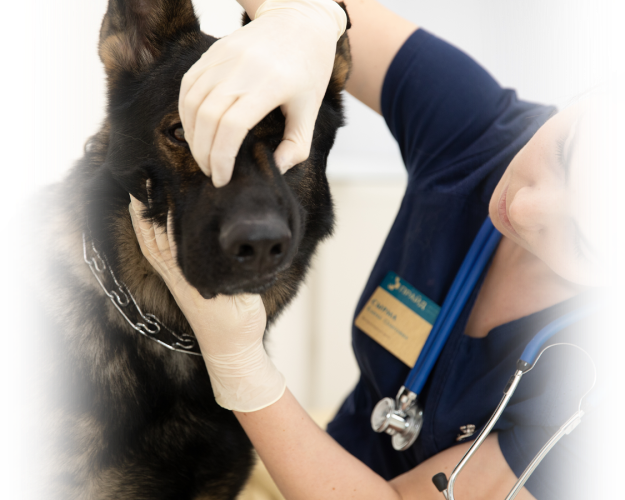
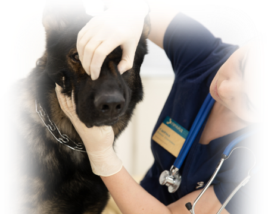
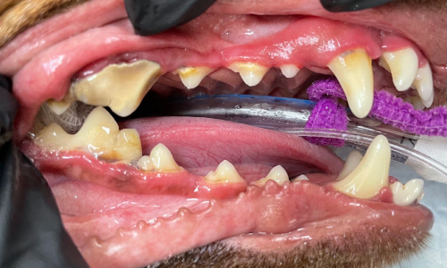
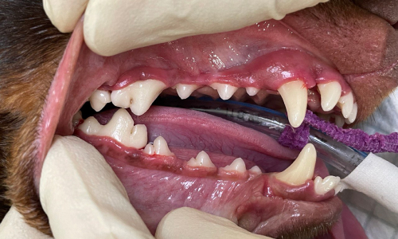
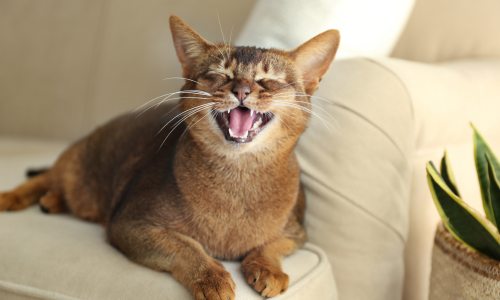

Стоматология для животных
Здоровье ротовой полости важно для животных так же, как и для людей. Запущенное состояние зубов может привести к серьезному и длительному лечению питомца!

Мы приглашаем вас на прием к ветеринарному стоматологу в центре «Прайд». Осмотр поможет вовремя обнаружить воспаление или поддержать здоровье зубов вашего любимца.
Зубам животных тоже нужно внимание
Часто владельцы не задумываются о том, как важно поддерживать здоровье полости рта и у питомцев тоже. Люди обращаются к ветеринарному стоматологу в запущенных случаях: когда животное уже отказывается от еды и явно заметны запах из пасти, абсцессы, гной из носа.
На ранних стадиях воспалительные процессы в полости рта проходят бессимптомно: заметить их можно разве что случайно, оказавшись у врача другой специализации
К каким последствиям может привести запущенное состояние зубов питомца?

В лучшем случае
У питомца будут наблюдаться гнойные истечения из носа из-за воспаления корней зубов или сформируются абсцессы. Животное начнет испытывать боль во время еды, может появиться отечность морды, повышение температуры, покраснение и воспаление глаз. Скорее всего, воспаленный зуб придется удалять, а питомцу — проходить дальнейшее терапевтическое лечение.

В худшем случае
Несоблюдение гигиены полости рта у животных может привести к серьезным заболеваниям костных тканей. Так, воспаление в ротовой полости (например, пародонтит) может вызвать воспаление костей — остеомиелит — или «растворение» костей — остеолиз. Такие тяжелые заболевания могут привести к деформации кости и серьезным осложнениям, лечение — длительное и сложное, вплоть до хирургического вмешательства.
Не допустить этих проблем поможет своевременное посещение ветеринарного стоматолога
На первичном приеме специалисты оценят состояние полости рта вашего питомца и назначат необходимые обследования.


«Прайд» — это возможность провести все необходимые процедуры в одном центре за один день
Наша стоматология полностью оснащена: есть стоматологические рентгены и конуснолучевые томографы, для чистки используются аппараты типа Air Flow.
В нашем центре работают узкоспециализированные ветеринарные стоматологи, оборудована отдельная стоматологическая операционная.
В нашей стоматологии доступны:
Санация ротовой полости — снятие мягких и твердых зубных отложений ультразвуковым скелером.
Дентальная рентгенография.
Удаление молочных зубов — у собак карликовых пород они не выпадают сами.
Удаление молочных зубов — у собак карликовых пород они не выпадают сами.
Витальная пульпотомия при травмах зуба, коррекции травматического прикуса.
Эндодонтическое лечение, протезирование с помощью коронок.
До

После

Необходимые процедуры и лечения назначит врач после прохождения первичного осмотра.
Секрет здоровой полости рта вашего любимца прост:
Чистите зубы питомцу в домашних условиях каждый день

Посещайте ветеринарного стоматолога не реже 2 раз в год
Следуйте рекомендациям профессионалов ветцентра «Прайд»
Позаботьтесь о зубах вашего питомца
Первичный прием в ветеринарном центре «Прайд» займет не более получаса и убережет вашего любимца от серьезных проблем со здоровьем.
Первичный прием не более получаса
